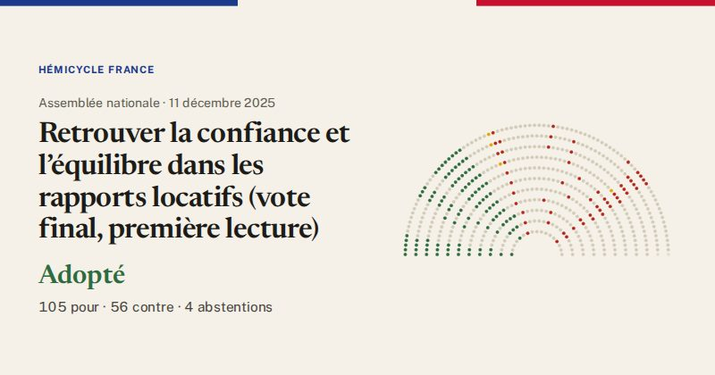

Assemblée nationale · scrutin n°4745 · 11 décembre 2025
Retrouver la confiance et l’équilibre dans les rapports locatifs (vote final, première lecture)
Adopté
105pour
56contre
4abstentions

Le vote de chaque groupe
| Groupe | Pour | Contre | Abst. | Membres |
|---|---|---|---|---|
| La France insoumise (LFI-NFP) | 30 | 0 | 0 | 71 |
| GDR (communistes) | 3 | 0 | 0 | 17 |
| Écologiste et Social | 17 | 0 | 0 | 38 |
| Socialistes et apparentés | 54 | 0 | 0 | 69 |
| LIOT | 1 | 0 | 0 | 22 |
| Ensemble pour la République | 0 | 13 | 3 | 91 |
| Les Démocrates (MoDem) | 0 | 4 | 0 | 36 |
| Horizons & Indépendants | 0 | 6 | 0 | 34 |
| Droite Républicaine | 0 | 2 | 0 | 49 |
| UDR (Union des droites) | 0 | 3 | 0 | 16 |
| Rassemblement National | 0 | 28 | 1 | 123 |
| Non-inscrits | 0 | 0 | 0 | 9 |